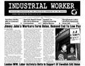

Submitted on Fri, 10/01/2010 - 6:16am
The Richmond IWW responded to a plan that will re-develop a historical part of Richmond's East End whose residents are majority working class and African American. The East End Vision is made up of a group of professionals & city officials who held a five day charrette (town hall meeting) in June to allow for the community to give their input on what the community should look like.
We found that residents were concerned about possible gentrification and the overwhelming influx of middle class residents that would be attracted to such a development. Sustainable East End Development was formed by the Richmond IWW and local residents to help unify the voices of the affected residents and ensure that no one is displaced.
Another iniative the Richmond IWW is working on is creating a Richmond Renters Union to help residents organize and politicize themselves around the issue of gentrification.
Sustainable East End Development
St. Stephens Koinonia Church
505 N. 33rd St Richmond, Virginia
richmondiww@gmail.com
804-873-3067
Dear Councilperson Cynthia Newbille, Ashley Peace and Juanita Buster,
Submitted on Thu, 09/30/2010 - 12:56pm
 Industrial Workers of the World (IWW) union barista Jeffrey W. Bauer was wrongfully fired for organizing at Ozzie's Coffee & Tea in New York City on June 29th, 2010.
Industrial Workers of the World (IWW) union barista Jeffrey W. Bauer was wrongfully fired for organizing at Ozzie's Coffee & Tea in New York City on June 29th, 2010.
The NYC IWW has been engaged in a fight for justice for Fellow Worker Jeff Bauer, both through Direct Action and filing Unfair Labor Practices (ULPs) with the National Labor Relations Board (NLRB).
PHONE ZAP General Store Manager, Rafael at both Ozzie's locations!!!!
Thursday, September 30th. Noon to 5 pm EST call (718) 768-6868 ask for Rafael or available manager.
Friday, October 1st. 10 am to 3 pm EST call (718) 398-6695 Ask for Rafael, Melissa or available manager.
Demand that...
- 1. Union barista Jeff Bauer be immediately reinstated.
- 2. Ozzie's treat their employees with respect and obey Federal Labor Laws.
- 3. Stop lying about Jeff Bauer's work ethic to the NLRB and the media.
IWW union barista Jeff Bauer worked at Ozzie's for over a year and proved himself to be a hard worker with a strong work ethic. The quality of his labor was never questioned before his union affiliation was leaked to management. In fact, Jeff was offered the General Store Manager position before it was given to Rafael, but turned it down on principal as it went against his political beliefs as both an anarchist and a unionist.
Submitted on Thu, 09/30/2010 - 9:19am
Your General Defense Committee is proud to be co-sponsoring this event again this year. Please visit www.OCTOBER22.org and represent your union at a local event. Please report back, with photos and short narratives, to miller.kennethalan@gmail.com
The Call for the 15th National Day of Protest to Stop Police Brutality, Repression and the Criminalization of a Generation October 22, 2010: UNITE TO FIGHT!
Hundreds of people from around the country marched in Detroit to express their pain and outrage at the police shooting of seven-year old Aiyana Jones, killed during a police raid while she was sleeping in her home. Hundreds more will march on the Department of Justice in Washington DC on September 25th for the Redeem Aiyana’s Dream March, coordinated on the same day with the Mothers Taking a Stand Against Police Brutality and Gun Violence rally taking place in Oakland, CA for Aiyana Jones and Oscar Grant.
Submitted on Tue, 09/28/2010 - 10:12pm

Headlines:
- Jimmy John’s Workers Form Union, Demand End To Low Pay
- London IWW, Labor Activists Unite In Support Of Swedish SAC Union
- Squeezed Baristas Shut Down Starbucks In Omaha, Nebraska
Features:
- Special: Report from the 2010 General Convention
- Update on imprisoned Fellow Worker Marie Mason
- Bangladesh Labor Activists Released from Jail
Download a free PDF copy of this issue.
Submitted on Sun, 09/26/2010 - 5:27pm
Richmond Transit Riders Union
220 West Broad Street
Richmond, Virginia 23220
richmondtru@gmail.com
Dear Mayor Dwight C. Jones, Council Persons and CEO John M. Lewis Jr.,
In regards to Councilpersons Tyler & Conner's paper calling for a 'GRTC Transit Study Task Force' [Ord. No. 2010-173], the Richmond Transit Riders Union understands that a similar study has already been presented. We are concerned that another such study would be redundant.
The Greater Richmond Transit Company's 387 page 'Comprehensive Operations Analysis' [ http://ridegrtc.com/images/GRTC_Final_COA.pdf ] was conducted over a three year period from 2004 – 2007 outlining many strategies, trends, regional demographics, and grievances taken directly from the ridership.
Councilperson Tyler stated during the September 23, 2010 'Governmental Operations Committee' meeting that he had not yet read this analysis.
GRTC's study already contains valuable information and suggestions, even possible solutions that would help to increase ridership and move GRTC towards a more equitable and efficient public transportation system.